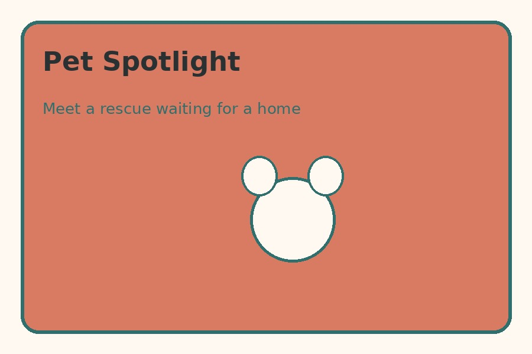
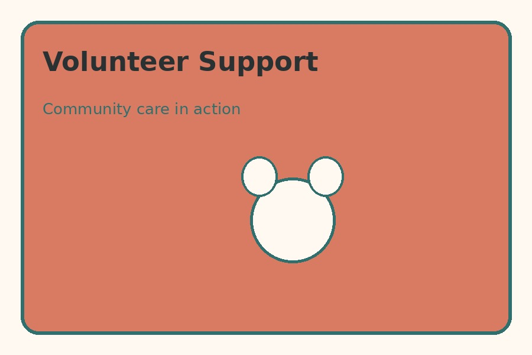

How You Can Help
Adoption
Learn about available pets, meet potential matches, and complete an adoption application when you are ready.
Foster Program
Provide a temporary home while an animal waits for adoption. Foster families receive guidance from the rescue team.
Volunteer Roles
Help with events, transportation, animal care, outreach, photography, and other community support needs.

Community Volunteers

Volunteers help the rescue expand its reach and give animals more individual attention.